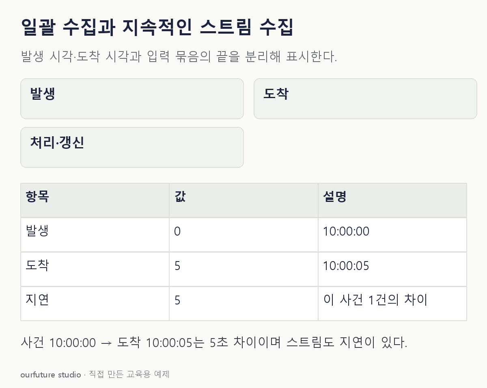

조건을 바꾸며 확인하기
도착 지연은 자체 단일 사건 값이다. 이 체험은 입력과 처리 방식을 함께 정한 두 예시를 전환하며, bounded 여부만으로 모든 실행 방식을 분류하지 않는다. 처리 시간·워터마크·도구의 실제 성능을 시뮬레이션하지 않는다.
설명 그림과 비교하기
아래 그림과 표는 고정된 설명 예제입니다. 기본·변형 중 어떤 조건인지 캡션을 읽고, 바꾼 입력의 결과는 계산 칸에서 확인하세요.

같은 문제를 직접 골라 보기
로그가 계속 발생하고 도착할 때마다 짧은 주기로 결과를 갱신한다.
조건을 더 바꾸면?
하루 로그를 확정한 파일 하나로 모아 다음 날 한 번 처리하면?
변형 풀이 확인
일괄 처리의 예다.
처리할 입력의 범위와 끝이 정해진 묶음으로 바뀌었다.
계속 들어오는가, 끝이 정해진 묶음인가.